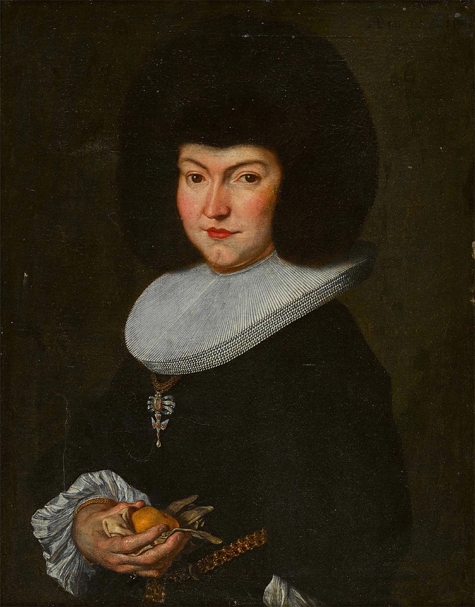
Porträt von Barbe de Theisson, 1663, Öl auf Leinwand, 78 × 61 cm, ausfindig gemacht via Mutual Art
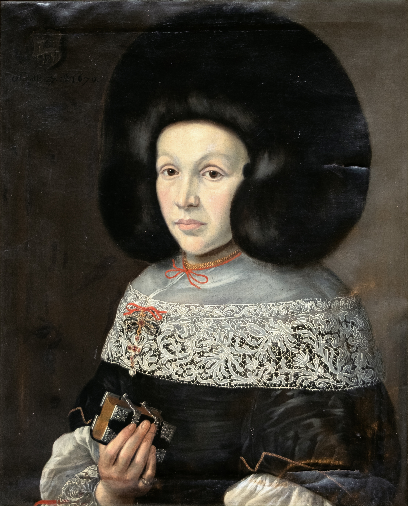
Porträt von Ursula Esther Schöni (* 1643), 1670, Öl auf Leinwand, 70.5 × 56.5 cm, Porträtdok. 4966, Foto: Luca Blum
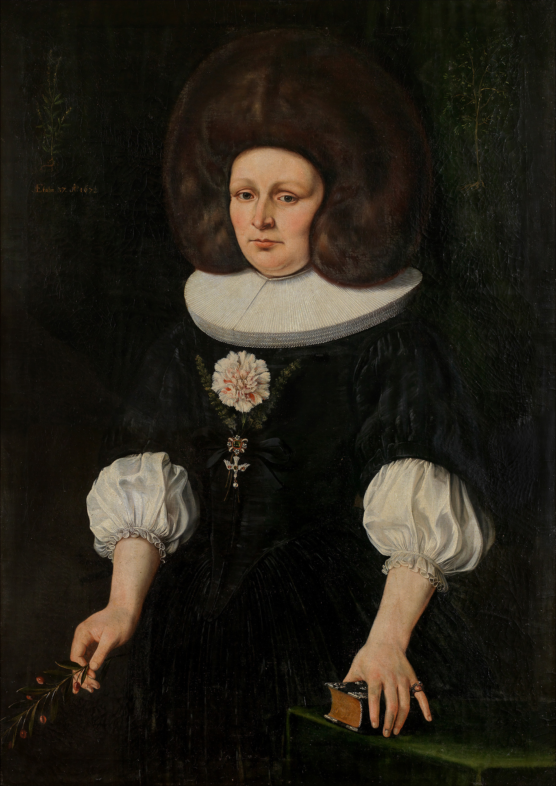
Johannes Dünz (* 17.01.1645, Brugg, † 09.10.1736, Bern), Bildnis Elisabeth von Werdt-Andreae, 1672, Öl auf textilem Bildträger [Leinen/Hanf] 113.5 × 82.5 cm, Kunstmuseum Bern G 13.022, Foto: Kunstmuseum Bern
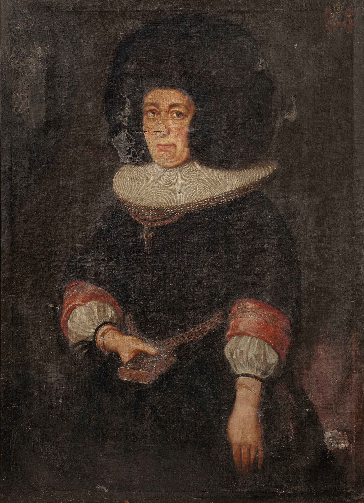
Porträt von Katharina Tscharner geb.
Lüthardt verh. Berseth (1626-1704), 1675, Öl auf Leinwand, 114.0 × 84.5 cm, H/41359
Porträtdok. 6372, © Bernisches Historisches Museum Bern, Foto: Christine Moor. Eigentum der Gesellschaft zu Ober-Gerwern
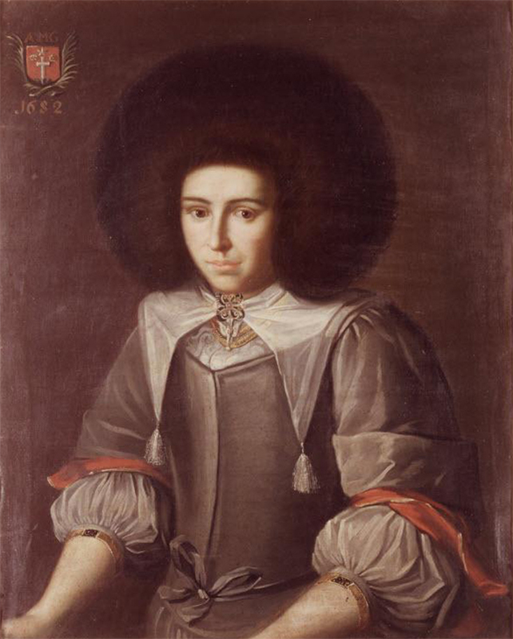
Porträt von Anna Maria Wyttenbach, 1682, Öl auf Leinwand, 83 × 66.5 cm, Burgerbibliothek Bern, Porträtdok. 7867, Foto: Gerhard Howald
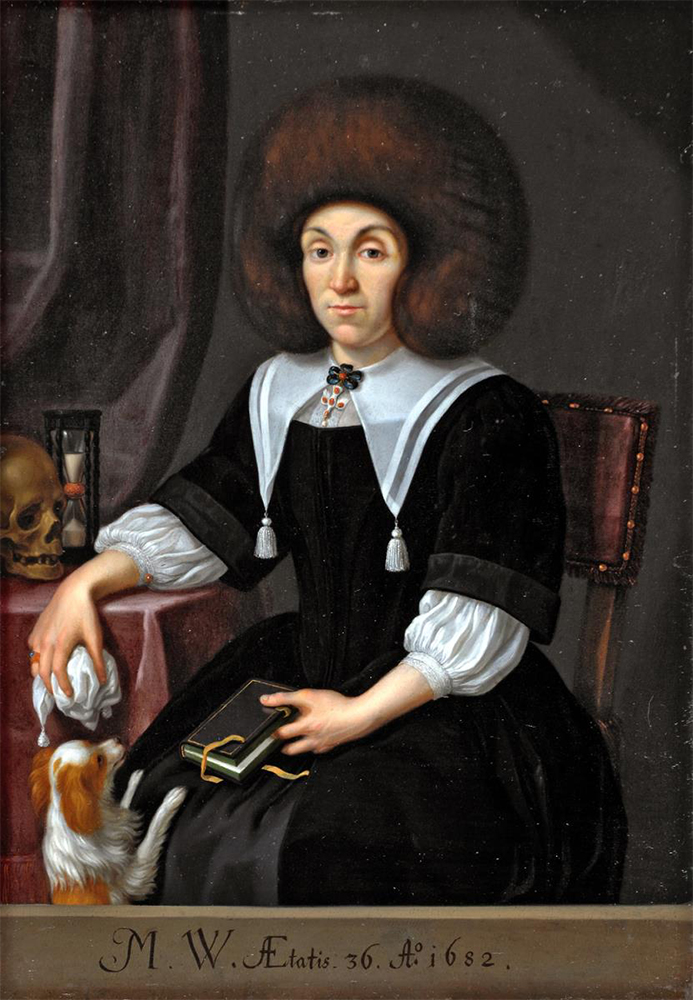
Porträt von Magdalena Weiss, 1682, 31.5 × 22.1 cm, Kunstammlung des Bundes vW134, Porträtdok. 2067, Foto: Matthias Bill, Belp, Public Domain
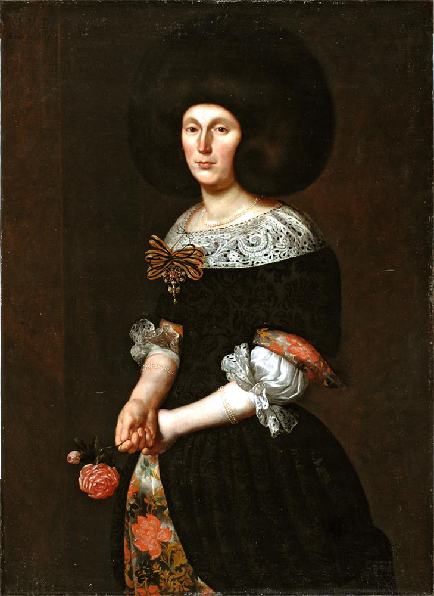
Porträt von Maria Magdalena von Diesbach, 1683, Öl auf Leinwand, 114.2 × 83 cm, Kunstsammlung des Bundes vW15, Foto: Matthias Bill, Belp, Public Domain
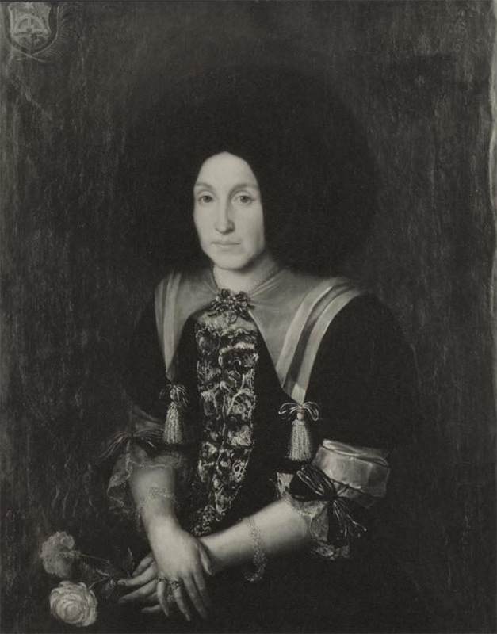
Porträt von Anna Maria Engel, 1686, Öl auf Leinwand, 96 × 75 cm, Burgerbibliothek Bern, Porträtdok. 1153
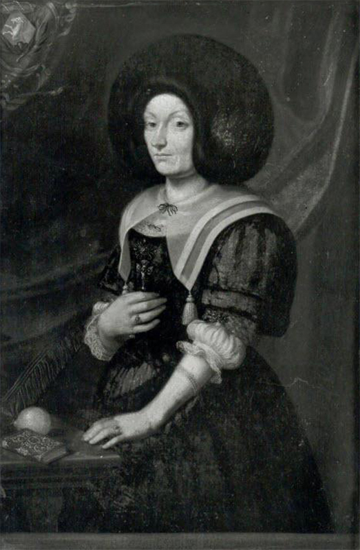
Porträt von Johanna Katharina Steiger (geb. von Muralt) (1665–1727), 1689, Öl auf Karton, 35 × 23.5 cm, Burgerbibliothek Bern, Porträtdok. 5515, Foto: Gerhard Howald
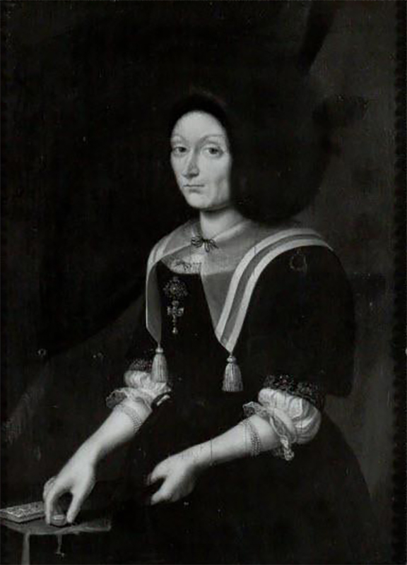
Porträt von Johanna Katharina Steiger (geb. von Muralt) (1665–1727), ca. 1689, Öl auf Holz, 30.5 × 22.5 cm, Burgerbibliothek Bern, Porträtdok. 5516, Foto: Gerhard Howald
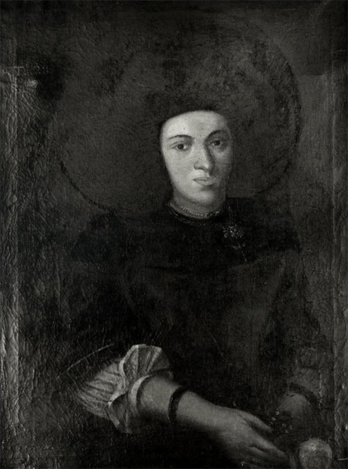
Porträt von Unbekannt, 1689, Öl auf Leinwand, 86 × 66 cm, zuletzt nachgewiesen im Kunsthandel, Burgerbibliothek Bern, Porträtdok. 9212, Foto: Gerhard Howald
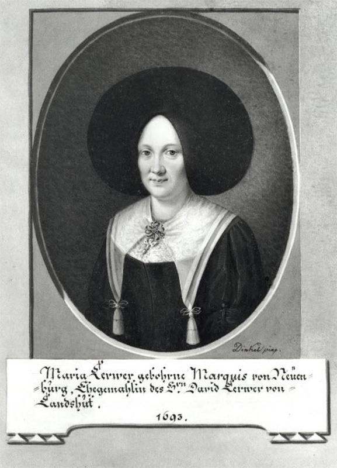
Porträt von Maria Lerber (geb. Marquis), 1693, Guache auf Papier, 13.5 × 10.5 cm, Burgerbibliothek Bern, Porträtdok. 3545, Foto: Gerhard Howald
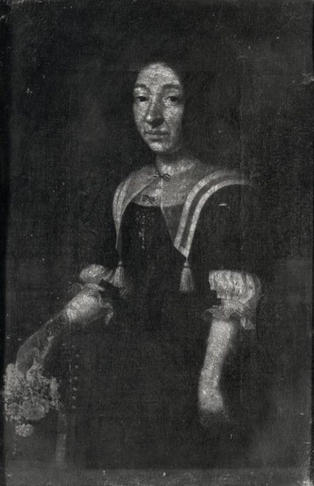
Porträt von Unbekannt, 17. Jh. Öl auf Leinwand, 35 × 23 cm, zuletzt nachgewiesen im Kunsthandel, Burgerbibliothek Bern, Porträtdok. 9683, Foto: Gerhard Howald